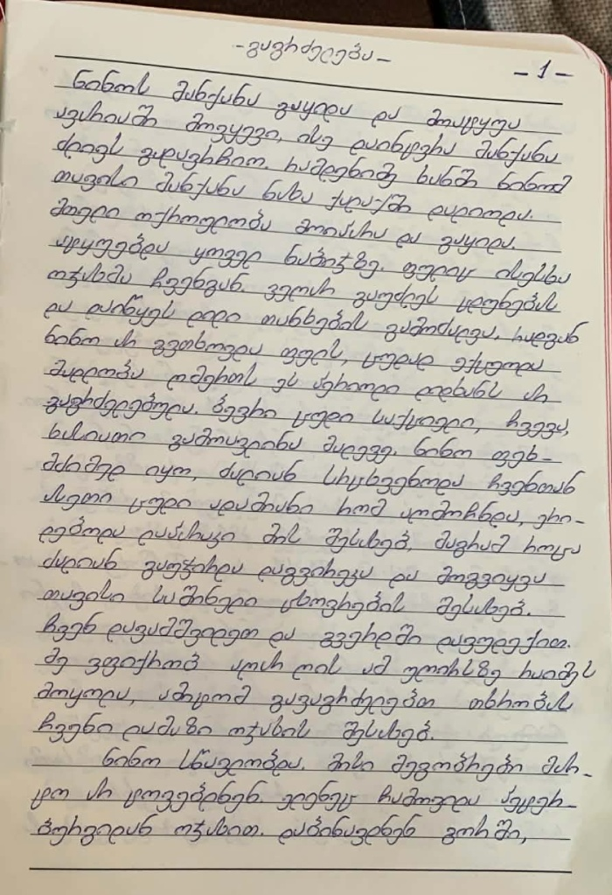

How I transcribed my grandmother's book using AI
December 2024
So my grandmother, Manana Parunashvili, wrote a book called "House of Daisies" which is essentially a book about her life and experiences. This book is written in Georgian and so we came across an issue. We do not know which AI could transcribe Georgian text. First instinct was claude/chatgpt. So let's see what they can do even now ( I started this project like 7 months ago, I am lazy what can I say ).

I know most of you will not understand Georgian but just for context… Claude 4.7 adaptive:
ჩემო ასულებო, ამ ნივთებმა ამდენ ხანდახმით (?) ჩემი ცხოვრების ეპიზოდები, შთაბეჭდილებები, სამყაროს ხედვები აქცეს (?). მე, მანანა ჯაფარიძე, დავიბადე 1959 წელს 28 სექტემბერს, ციდვენი (?) ხეთის (?) სოფელ ოჯეშ (?). ეს ჩემთვის ძალიან საამაყო იყო ხელმძღვანელ (?) და ჩემი ოჯახისთვისაც, ჰარვის (?) მახსოვს ჩემს ბავშვობ (?) ვერ დავსახო, ომელი (?) ერთ ვერ ვუხსოვილი (?) იყო. ასევე დამარქვეს "მანანა", ანუ მამის საყვირება (?) მანანო (?). მეც ხომ ის ბინასიავი (?) მამახემი (?). დამბდა (?) ბდა (?) ის ერთი წლის ძამ-ედლი (?). დაცხრით (?) ოის (?) კაცახი (?) მამის ვცხუჟ (?). ვიმხელვმუით (?) ეგ საყვახიული (?). ის ცხოიდავის (?) ასახდბხდ (?) კაკი (?) ვუხცჟკლეგა (?) იშხიათ (?) ომ (?) ის კვედზე (?) იმოქმდა (?). ვვეცჯცზჯჯბის (?), ხელი ეჯეზე (?) ვუკახცზბის (?) ომთის (?) მამახემის (?) ნათესაცხ-მეომრებში (?), ასევე დედახემის (?) ნათესაცხ-მეომრებში (?). დედახემი (?), ოახახი (?) კიხასაძე (?), მასაკშელიასი (?) ოჯასიის (?) იყო, ექვსი ღედმაშზხნი (?) ჰყვნდნ (?). ჰდა (?), ოია (?) ხხეიდხ (?), ბიასახიდი (?) ემერდი (?). მამა, ვკოდია (?) კიხასაძე (?), დაოდა (?)…
Without even understanding Georgian you can see how many question marks it put down… so this would definitely not cut it, especially since there are around 170 pages of the book that I need to transcribe. Some of you might ask, why not just rewrite it by hand? And I wanted to do the same, but hey real talk we need to adapt to new life and do some cool shit!
Let's try ChatGPT now.
Latest 5.5 Thinking:
ჩემო შვილებო, ამ წიგნში მინდა მოგითხროთ ჩემი ცხოვრების გამოცდილება, შთაბეჭდილებები, სასიხარულო დღეები. მე, მანანა [გვარი გაურკვეველია], დავიბადე 1959 წლის 28 სექტემბერს, აჭარის რაიონის სოფელ ღორჯომში. ეს პატარა ძველი სამშობლო იყო ჩემთვის და ჩემი ოჯახისთვის, ხუთ- [გაურკვეველია] მამაჩემი ჩემს დაბადებას ვერ დაესწრო, რამდენიმე დღით გარდაცვლილი იყო. ის კი ყოველთვის გოგონას შეძენას ნატრობდა. სახლში დამხვდნენ „მანანა", ანუ მამამ საკუთარი მანანა მარქვა. მე ხომ არ მენახა მამაჩემი. დამხვდა დედა და ერთი წლის ძმა — ედიკა. დავიწყეთ ორი პატარა ბავშვის გაზრდა. ვიზრდებოდით დიდ სიყვარულში. იმ დროისა- თვის ასაღზრდელად ქალის გაჭირვება იმაზე იყო და ყველასადმი რომ მქონდა. გვიყვებოდნენ ბევრ ძველ, გადმოცემებით ხოლმე მამა- ჩემის ნათესავ-მეგობრები, ასევე დედაჩემის ნათესავ-მეგობრები. დედაჩემი, თამარი [გვარი გაურკვეველია], მშრომელი- დიანი ოჯახიდან იყო, ექვსი დედმამიშვილი ჰყავდათ. დედა, ოლია ბებია, დასასრული გაჭირდა. მამა, ვალოდია [გვარი გაურკვეველია], დაკარგა.
As you can see there is a lot of [გვარი გაურკვეველია] and [გაურკვეველია] which are essentially place holders and marks for ChatGPT not understanding what is written there.
Though I gotta say I am impressed with how it actually did! Was not expecting this, well at least when we tried it before ChatGPT did worse so, hey nice! Still with a downside tho, took at least like 3 minutes.
So at this point we are wondering what we could use and we came across gemini version that really made us excited! gemini-3-pro-image-preview is the version we were using ( I think ) and honestly? It was amazing:
გაგრძელება - 1 - ნინოს მანქანა გაყიდა და მოატყუა ავარიაში მოვყევი, ისე დაიმტვრა მანქანა ძლივს გადავრჩიო. რამდენიმე ხანში ნინომ თავისი მანქანა ნახა ქალაქში დადიოდა. მთელი ოქროულობა მოითხოვა და გაყიდა. ატყუებდა ყოველ ნაბიჯზე. ფულიც ისესხა ოჯახმა ჩვენგან. ვეღარ გაუძლეს ცდუნებას და დაიწყეს დიდი თანხების გამოძალვა, რადგან ნინო არ გვითხოვდა ფულს, ცუდად ექცეოდა მადლობა ღმერთს ეს პერიოდი დიდხანს არ გაგრძელებულა. ბევრი ცუდი საქციელი, ჩვევა, ხასიათი გამოავლინა მალევე, ნინო ფეხ- მძიმედ იყო, ძალიან სრცხვენოდა ჩვენთან ასეთი ცუდი ადამიანო რომ აღმოჩნდა, ერი- დებოდა ლაპარაკი მის შესახებ, მაგრამ როცა ძალიან გაუჭირდა დაგვირეკა და მოგვიყვა თავისი საშინელი ცხოვრების შესახებ. ჩვენ დავამშვიდეთ და გვერდში დავუდექით. მე ვფიქრობ აღარ ღირს ამ უღირსზე რაიმეს მოყოლა, ამიტომ გავაგრძელებ თხრობას ჩვენი ლამაზი ოჯახის შესახებ. ნინო სწავლობდა, მისი მეგობრები მარ- ტო არ ტოვებდნენ. ელენეც ჩამოვიდა პეტერ- ბურგიდან ოჯახით. დაბინავდნენ გორში,
Link for when we first tested it->And so yeah! The text is the exact transcription of the image we provided. This blew our minds, and gave us a way to actually transcribe our grandmother's book without having to re-write it hand-by-hand. Though we need to understand a few keys of how pictures should be provided.
1. Picture that was just 1 page, was transcribed easily, but of course we didn't have the images single paged :D... We had 2 pages for each picture which made it like 5x harder to transcribe.
2. Picture that had uneven lighting was more likely to have errors than the ones with good lighting.
3. Of course the quality of the pictures are highly important, this goes with out saying.
4. One of the most important things is the prompt you give the actual AI. At first it was quite simple, just transcribe the Georgian text, but what I saw while transcribing was, after the AI went to the next page and didn't know the context of the following words, it was just making stuff up. Well, expected behavior since it is not a human nor does it have history of the provided transcriptions.
And that actually gave me an idea of how the transcription could work even better, which I didn't actually implement but it was intriguing. The thing is that the whole project should've taken around like a week or 2 at maximum... I took around 6-7 Months :D. This speaks about my personality I guess, even as I am writing this post I think I started around 2 months ago and now we are here at Jul 24 2026.
Anyhow, back to the topic. If we actually implement the idea of the actual conversation-like flow with the AI transcription instead of just following page by page/new-new conversations, I think we would have a much higher percentage of correct transcriptions. As I was doing this project, the 2 pages, bad lighting, 0 history of transcriptions made it quite hard to get it right... I'd say that there were only a few pages that actually didn't need any correction or just needed a few words fixing... out of 170+ :D.
But overall I think this was a great practice and even now, we can see the fact that gemini is excelling in georgian transcription versus big competitors such as chatGPT and claudeAI.
If you got a different opinion, feel free to share! I want to find a transcriptor that far exceeds my expectations!